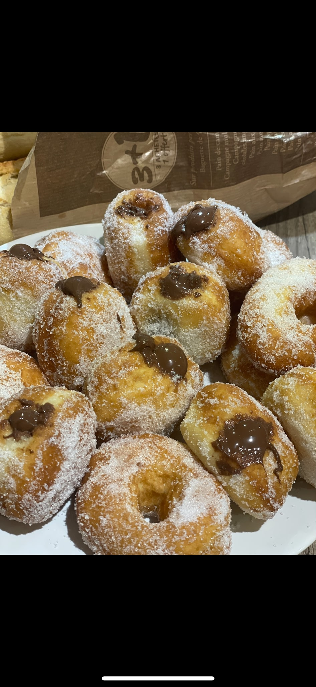

Viennoiserie · Beignet
Nutel'Ball
Nonekcal / part
14parts
None gprotéines
None gglucides
Ingrédients
- 350 g de farine
- 2 œufs
- 40 g de sucre
- 120 ml de lait tiède
- 12 g de levure fraîche (ou 5 g de levure sèche)
- Zeste d'un citron
- 5 g de sel
- 30 g de beurre ramolli
- Sucre fin pour enrober
- Huile de friture
- Nutella pour la garniture
Préparation
- Diluez la levure dans le lait tiède et laissez reposer 5 à 10 minutes jusqu'à ce qu'elle mousse.
- Dans la cuve du robot, mettez la farine avec le sucre, le sel et le zeste de citron. Ajoutez les œufs et le lait avec la levure.
- Pétrissez jusqu'à ce que la pâte soit homogène et se détache des parois. Ajoutez alors le beurre ramolli en morceaux et continuez à pétrir jusqu'à incorporation complète. La pâte doit être bien souple.
- Couvrez et laissez lever jusqu'à ce que la pâte double de volume (environ 1h à température ambiante).
- Étalez la pâte sur un plan légèrement fariné. Découpez des cercles à l'emporte-pièce et déposez chaque beignet sur un carré de papier sulfurisé.
- Couvrez et laissez pousser encore 30 minutes.
- Faites chauffer un bain d'huile à 190°C. Plongez les beignets dans l'huile avec leur carré de papier sulfurisé — le papier se détachera tout seul à la cuisson. Faites cuire environ 1 minute de chaque côté jusqu'à belle dorure.
- Égouttez sur du papier absorbant puis enrobez immédiatement de sucre fin.
- Une fois tiédis, fourrez les beignets à la poche à douille avec la garniture de votre choix !
L'astuce d'ElsaIci j'ai choisi le Nutella, mais tout est permis : confiture, compote, praliné, crème pâtissière... Le zeste de citron dans la pâte apporte une touche de fraîcheur qui contrebalance le côté gourmand. 🍋
Voir cette recette en mode cuisine